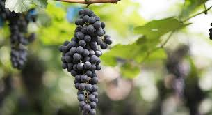

 A grape farm is a cultivated area dedicated to growing grapevines, which are carefully tended to produce high-quality grapes for consumption or wine production. The farm is typically organized into rows of grapevines, with each vine trained to grow in specific patterns for optimal sunlight exposure and air circulation.During harvest, the ripe grapes are picked at their peak sweetness and flavor, ready to be either enjoyed fresh or processed into wine, raisins, or other products. A grape farm offers a combination of natural beauty and agricultural expertise, often becoming a source of pride for those who work it.